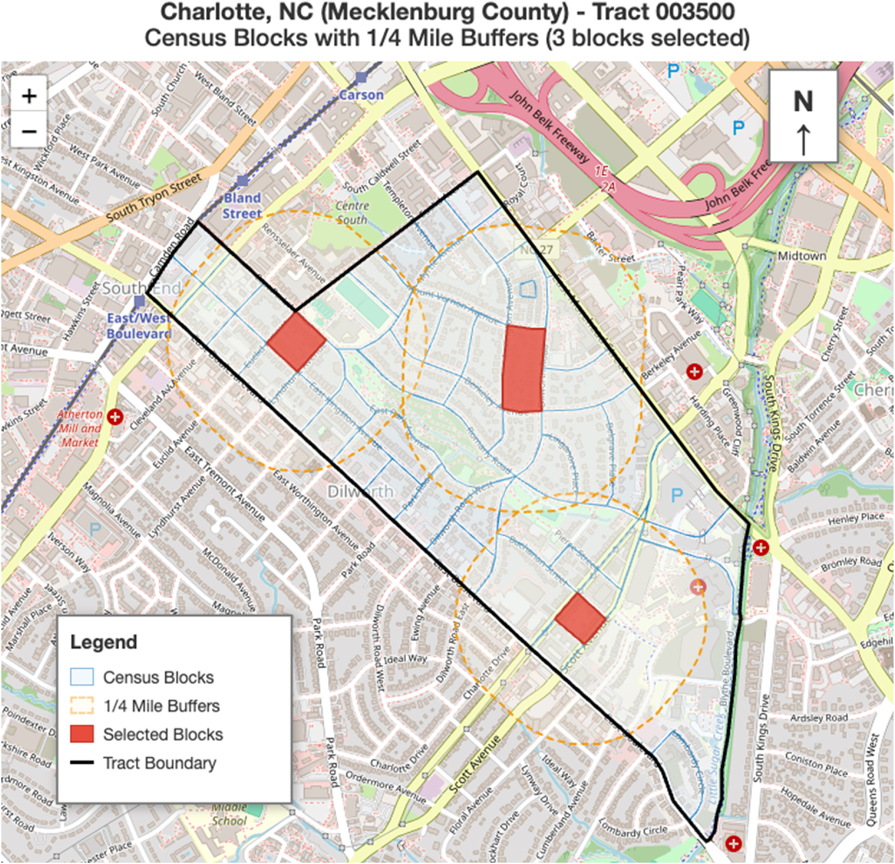

Measuring the Spatial Scale of Structural Racism and Discrimination
Explores how structural racism operates at different spatial scales and its consequences for life expectancy. Constructs novel meso-level measures — including eviction rates, housing vacancies, loan denials, and proximity to toxic waste — at four buffer radii, alongside county-level racial inequality. Finds a nonlinear relationship where life expectancy drops sharply at higher concentrations of multidimensional structural racism. My contribution: data curation (geocoding, multi-source spatial data processing) and geospatial concept visualization.
View →